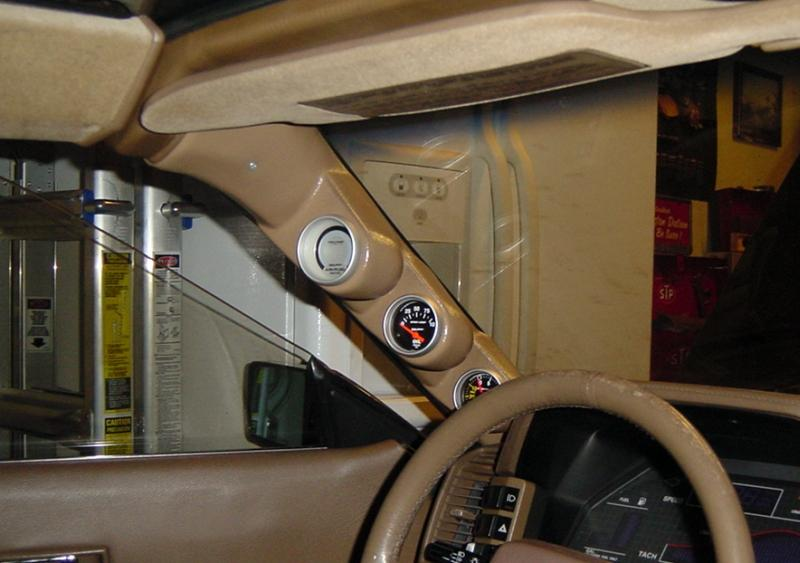
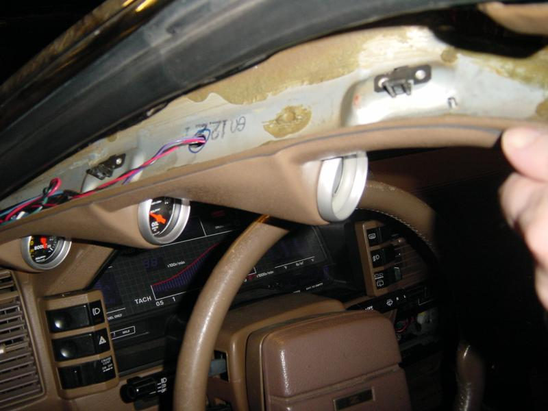
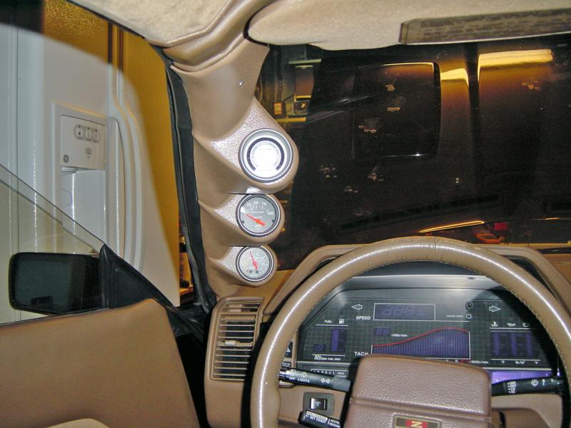

-
So I want to get the lo-tek A pillar 3 gauge pod. Best prices I have found are at egauges.com.
Initially I wanted these gauges
C2 Autometer type,
electric boost gauge
wideband A/F ($360!!!)
EGT gauge
but that would cost $550!!!!
So, now I think I decided on:
Cyberdyne electric water temp gauge
C2 EGT gauge
C2 mechanical boost gauge
This fits into the budget much better. Anybody have comments on this setup? Know of a better deal somewhere? Should I go for broke and get the electric boost gauge? How is the accuracy of mechanical boost gauges compared to electric?
Thanks for any comments/advice,
Sean1986 300zx turbo, 5-speed, T-Top 2 seater
-
My water gauge is invaluable. I have a mechanical boost gauge. You're on the right path by getting a boost gauge, I do admit it would have been easier to run an electric gauge though. Running a vac line is a little harder than a signal line. My vac line has held up for a few years and not melted or anything, & the gauge seems reliable, so mechanical is a good bet if you want to save $$$. I have some pics and words about my a-pillar wetup on my website: http://www.cardomain.com/ride/405427/6 (scroll more than halfway down) -
you could get some prosports..they're a lot cheaper..
1988 570zx SS Edition
Originally posted by Neil86t -
I've got a great deal for you! I just ordered some Prosports for my new gauge setup in a 52mm size. They're intended for the center cluster in the stock location. After I got them I realized that the size is closer to a 60mm so I ordered those as well. They are the correct amber color to match our dashes and only removed from the package for a test fit. Here is what I've got:
Electric boost gauge, 52mm
Electric oil pressure gauge, 52mm
The company I ordered them from are kind of being difficult about the return ( Deft Racing, buy at your own risk) and I'd rather lose $20 on the price than call and get annoyed again. I bought the 2 for $120 shipped, I'll sell them for $100 shipped to your door. Pics will be up in a few minutes.

-
Does that pillar pod replace the whole A-pillar?What brand and where did you get it?joeyfeets wrote: My water gauge is invaluable. I have a mechanical boost gauge. You're on the right path by getting a boost gauge, I do admit it would have been easier to run an electric gauge though. Running a vac line is a little harder than a signal line. My vac line has held up for a few years and not melted or anything, & the gauge seems reliable, so mechanical is a good bet if you want to save $$$. I have some pics and words about my a-pillar wetup on my website: http://www.cardomain.com/ride/405427/6 (scroll more than halfway down)"If your car cant do a burnout from a 60mph rolling start, then your engine needs more work."
"Nitrous doesn't blow up motors; Idiots with nitrous blow up motors."
Shooting for 500whp

-
just get the electric one…the prosport electric is only like 20$ or so more than the mechanical…i have Water, Electric, and Oil, i just havent put them on my car cuz i dont know where i want to put them…i dont really like the A pillar mount because i dont like shit obstructing my view
1988 570zx SS Edition
Originally posted by Neil86t -
I can vouch for the Prosports too.
I have:
Elec Oil Press
Mech Boost
Analog O2*
Lo-tek 3 gauge pod.
They are sometimes hard to see in the daytime, but frickin cool at night.
I've had lots of comments on them. The blue back light is the shade of
blue I'm matching the rest of the dash lights too.
The A pillar triple gaugepod screws onto your existing pillar trim piece. I wasn't thrilled
with this idea so i found the same color trim piece from a junkyard Z and used that one.
I also painted the black pod to match the tan interior.
One thing i thought i was being clever with on the install, backfired.
The fit of the plastic gaugepod was less than fantastic so i used a heatgun
to carefully roll/form the edges and make it fit better. I turned out really well…
until summer. The heat of the direct sunlight and a baking interior undid any
forming of the pod. So i now have a gap that is visible from the outside looking in.
I'm not sure if i wanna glue it or not.
*no its not as accurate as a wideband, but i can tell by the average of the needle
swing when its running stoich and when it hits a lean/rich surge.
I think i have pics on my home PC that i can update this post if you are interested.
84 AE/Shiro #683/Shiro #820/84 Turbo -
Can someone explain the advantage/disadvantage of mech/elec. boost gauges?
1985 Nissan 300ZX 2+2- My first Z, back in the family
1987 Nissan 300ZX Turbo RIP 4/87 - 4/28/2011
Under Construction: 1986 Nissan 300ZX NA2T Slicktop
Originally posted by Tempestas -
Electric boost gauges will have a sender unit that you place inside the engine bay. It's usually placed very near the source you're useing. The advantages will be a slightly faster response by the gauge, and also less chance of something happening to the vac hose, like being pinched etc.. With a mechanical gauge, you run the boost source line all the way from the source to the gauge which could be 3+ feet. With an electric, it is generally less than 1'.TearingRaven wrote: Can someone explain the advantage/disadvantage of mech/elec. boost gauges?
To be honest, having both, it's really not a huge deal either way. The electronic is usually just alot more clean/ease of an install, which is worth the extra few $$ to me.1985 NA2T(now RB) * 1988 SS x2 * 1984 AE x3 * 2006 350Z

-
Tastes Great/Less Filling
Also with an electrical unit, you have another failure point in the
sender unit. IMHO, i'd rather a replace a few cents worth of polyethylene
tube than having to replace a sender unit. I wouldn't do that on the oil
pressure gauge though, cost outweighs safety there. Fishing the tube thru
the firewall wasn't that difficult, i drilled a hole next to where the hood release
cable passes thru the firewall and ran my wires/tube thru there. I've got tube
for my gauge and boost controller going thru it and have no probs with crimped
hose. As long as you are mindful of where you route your wire/hoses and don't try to
zip tie them to the exhaust manifold or anything, you should be fine.
84 AE/Shiro #683/Shiro #820/84 Turbo -
It's up to the buyer, but I trust an eletric sending unit that is less complex than a relay more than i trust a 3-4' run of vacuum hose that is constantly going back and fourth between vacuum and pressure.
Also, why did you have to use the stock trim piece for your lotek pod install? The few installs I've seen people have completely replaced the stock trim piece and it worked just fine.1985 NA2T(now RB) * 1988 SS x2 * 1984 AE x3 * 2006 350Z
-
If you use Polyethylene tubing, it will take the pressure fluctuations with no
problems. I've ran lengths of it at ~100PSI of 40C water and, Nitrogen at my
old job and never had any failures. Failures usually happened where someone
couldn't figure out how to swage a fitting properly. I'd consider a sender if the
vac source was somewhere closer to the exhaust, but mine comes off the back
of the plenum behind the TB. Its also shielded in with the wire routing.
The Lotek pod from gaugepods.com is a molded plastic cover that is held to the
stock A pillar trim piece with 2 flathead screws. Unless you use longer screws
and attach it directly to the body sheetmetal, it is meant to attach to the
A pillar trim piece. At one time I thought it was a replacement for the trim piece
too, until someone documented their install over on z31.com a few years ago.
84 AE/Shiro #683/Shiro #820/84 Turbo -
[quote]85NA2T wrote:Its the same LoTek that everyone else buys. I agree with OK85ZX and say I ditched my stock a-pillar (kept it for awhile but finally lost it in a move) and totally replaced it with the Lotek. It fits snug and screws into stock location. Plus, with the big @$$ lines for the mech boost and stock t-top drain hose, there isn't much room back there.Originally posted by joeyfeets
As far as obstruction goes, I don't notice any at all. Getting in & out of the car, sometimes I hit it though. :-(
My install is ok, but if you're careful, it can line up really nice. All non-z31 guys Ive met don't notice its not a stock A-pillar. My interior is black to match. -
Well slap my @ss and call me susan!
I, being susan, stand corrected.
Interesting…
Well, i can vouch that it works as a cover to the stock A pillar trim piece. :-)
It wasn't too difficult to run the wires and vac line, but i can see that if you
were to use just the lotek, it would have been much much easier.
edit:
Here is some pics with my old autometer gauges installed:



Maybe i'll try it without the stock trim piece, it should make it sit more flush
at the top.
84 AE/Shiro #683/Shiro #820/84 Turbo

Copyright © 2006–. All rights reserved. Privacy Policy